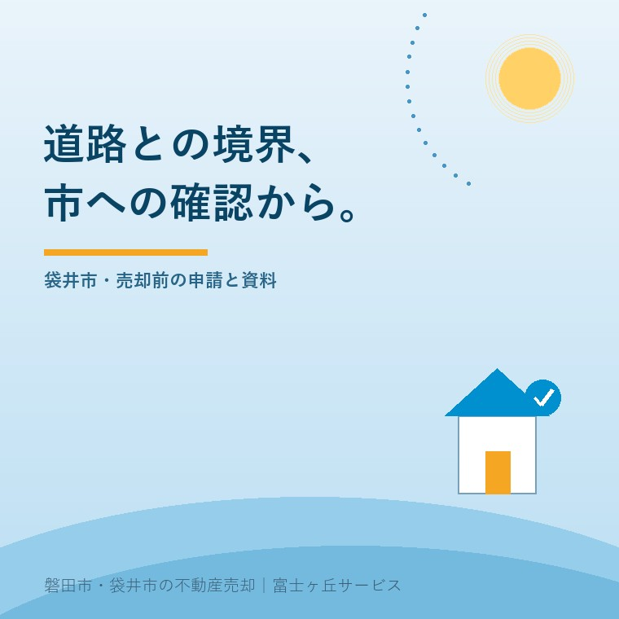
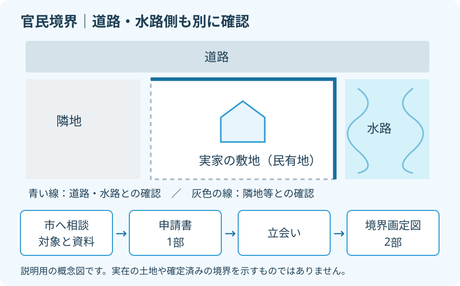

袋井市の官民境界、売却前に確認する申請先
2026年10月1日｜カテゴリ：地域・売却実務

この記事の要点
袋井の実家は道路と水路に接している。隣家との立会いだけで売却準備は足りる？
袋井市の道水路敷きとの境界確定は、維持管理課管理係に申請先と対象を確認します。市の案内では申請書1部、立会後に境界画定図2部。手元の公図や測量図を集め、追加資料と日程を相談します。磐田市・袋井市・森町では、介護施設の運営から不動産事業を始めた富士ヶ丘サービスのような地域密着の会社に相談する選択肢があります。
大石浩之（磐田市／不動産業）です。実家の売却準備で境界を調べるとき、隣の家との線だけに目が向くことがあります。敷地の前が道路、横が水路なら、公共の土地との境界も別に確かめます。
本記事は2026年10月1日確認の袋井市の申請案内と申請書から、売主が相談前に集める資料を整理します。境界の位置を記事上で判定するものではありません。土地家屋調査士などに依頼する作業と、家族が手元でできる準備を分けて考えます。
土地の日に、隣家と道路の境界を分ける
国土交通省は毎年10月を土地月間、10月1日を土地の日としています。2026年に始まった新しい境界手続きではなく、手元の敷地資料を見直す機会として取り上げます。記念日を理由に、売却や測量の依頼を急ぐ必要はありません。
官民境界は、公共の土地と民有地との境界です。袋井市の申請案内は、個人所有地と道水路敷きとの境界を確定する場合を示しています。隣家の所有地との線と、道路・水路との線では、確認の相手や手続きを同じと決めつけられません。
私は、市が申請の目的と提出部数を一覧で示した点を評価します。境界確定、公共用財産の用途廃止、寄附が別の手続きだと分かります。道路や水路に接しているというだけで、どの書類を使うかを取り違えずに相談できます。
その上で、一覧を読めば売却までの日数も分かる、という受け取り方には注文があります。申請の入口が分かることと、物件ごとの必要作業が決まることは別です。古い図面の有無、現地の状態、立会いの調整まで見て、予定を組む必要があります。
家族と隣地の方の予定を調整する準備は、実家の境界立会いを考える記事でも扱っています。本記事では、道路や水路側の確認をそこへ追加し、申請先を整理します。
袋井市の申請先と公共物の種類を確認
袋井市の境界確定申請の相談先は、維持管理課管理係です。市の案内にある電話番号は0538-44-3130。申請書には、市道、準用河川、認定外道路、普通河川・水路、その他という公共物の種類を選ぶ欄があります。
売主が最初に伝えるのは、実家の住所だけでなく土地の地番です。地番は土地を特定する番号で、申請書にも大字・字・地番の欄があります。どの敷地の、どちら側の道路や水路を確認したいのか、手元の公図に印を付けて説明すると質問が絞れます。
道路の呼び名を家族が知っていても、それだけで管理者は断定しません。申請書の選択欄を見て、自分で市道だと決める必要もありません。対象の道水路がこの手続きの対象か、別の管理者へ確認する必要があるかを市に聞きます。
資料探しの入口には、袋井市の地図情報で不動産の条件を確認する記事も使えます。ただし、地図の画面で場所を見つけたことを、境界確定が済んだ根拠にはしません。画面は照会場所を伝える補助として扱います。
過去の確定記録がありそうなら、日付、図面名、作成者が分かる部分を示します。私は「もう一度全部測る」と先に決めるより、残っている資料を使えるか聞く順を勧めます。家族の記憶にある立会いが、今回確認したい線を対象にしていたかも照合します。

添付図書は、家族の資料と作成依頼を分ける
袋井市の境界確定申請書には、位置図、案内図、申請民有地の地積測量図、公図等写しなどの添付図書が列挙されています。実測平面図及び横断面図、登記事項証明書、隣接地所有者等一覧表、印鑑証明書、その他の欄もあります。
私なら、書類名を一度に家族へ並べるのではなく、手元を探すものと、作成・取得の方法を相談するものに分けます。以下は相談前の整理案です。個別の土地で省略できる書類や、必要な様式・取得時期を保証する表ではありません。
| 資料の役割 | 申請書にある主な図書 | 家族がする準備 |
|---|---|---|
| 場所を示す | 位置図・案内図・公図等写し | 地番と対象の道水路を照合 |
| 形や測定結果を示す | 地積測量図・実測平面図及び横断面図 | 古い図面を探し、追加作成を相談 |
| 権利と関係者を示す | 登記事項証明書・隣接地所有者等一覧表 | 手元資料と連絡できる関係者を整理 |
| 申請者等を確認する | 印鑑証明書・その他の資料 | 取得時期や必要範囲を確認して手配 |
地積測量図は土地の面積や形状等を示す図面です。実測平面図と横断面図も、家族が地図に線を引けば代わりになるとは考えません。市の申請書が挙げる図書について、手元の資料で足りるか、測量や作成が必要かを専門家に見てもらいます。
意外に見落としやすいのは、申請書の添付図書欄に横断面図まで書かれている点です。市のウェブページの要約だけで書類を集めず、実際に使う申請書も開いて確認します。要約にない項目を、不要と自己判断しないためです。
資料を探す家族には、土地の購入時のファイル、以前の測量図、境界の確認に関する書面を探す役割をお願いする案を勧めます。原本は保管し、相談には写しを用意する。図面が見つからない場合も、作った人の名前や依頼時期が分かれば照会の手掛かりになります。
登記上の面積と測った面積の扱いは、公簿売買と実測売買の違いも確認してください。境界を確認する作業と、売買代金をどの面積で決めるかは分けて仲介会社へ相談します。登記や契約の個別判断は専門家に確認を。
袋井の売却日程は、立会後の図面まで見る
袋井市の案内では、境界確定申請書は1部、立会後の境界画定図は2部です。立会いの日が決まれば、それで書類の工程も終わると考えないようにします。立会後に提出する図面があることを、売却の予定表へ入れます。
私はこう考えます。隣の人と話がついた。それだけで、道路側の境界まで片付いたことにはしない。売主の家族が悪気なく「境界は大丈夫」と答えても、買主が想定する確認範囲と違えば、契約の話を戻すことになります。
仲介会社へは、どの線が確認済みで、どの線が未確認かを分けて伝えます。測量を依頼する相手には、市への照会、図面作成、立会いの調整、立会後の提出のうち、何を引き受ける見積りなのかを聞きます。作業名のない総額だけでは比べにくくなります。
今回確認した市の案内と申請書には、標準処理期間や測量費の定額表示はありません。何週間で必ず終わる、いくらで済むという数字は出せません。市への手続きに関する確認と、専門家へ依頼する作業の費用は分けて問い合わせます。
私にも、どこまで資料をそろえてから買主探しを始めるかは迷いがあります。費用を先に掛けすぎたくない売主の事情もあります。一方で、残る工程を隠して引渡日を約束する案内はしません。未確認の範囲を明かし、先に相談できる作業から進める方を選びます。
土地家屋調査士などには、相続で名義の整理中ならその状況も伝えます。家族の連絡担当と申請者が同じとは限りません。誰の資料や意思確認が必要かを確認してから動き、相続・登記の個別判断は専門家に確認を。
今日の確認は地番と古い図面の所在から
袋井市の実家を売るか検討している家族は、地番と古い図面の所在を調べるところから始められます。敷地の周囲を、隣家側、道路側、水路側に分けて一枚に記すだけでも、市や仲介会社への質問が具体的になります。
- 所在地・地番と、確認したい道水路を示す。
- 手元の図面と過去の確定記録の有無を整理する。
- 維持管理課管理係へ相談し、追加資料と依頼範囲を決める。
- 立会後の図面提出まで含め、引渡しの見通しを相談する。
私は、査定額を聞く準備と一緒に、道路と境界の確認先もそろえるよう案内します。富士ヶ丘サービスでは、磐田・袋井の地域事情と介護・不動産の相談をつなぎ、家族が困らない売却を支えます。売ると決める前の資料整理から相談できます。
よくある質問
売却準備と手続きの疑問を整理します。
- 隣家と立会い済みなら、市への確認は不要ですか？
- 隣家との確認だけで、道路や水路との官民境界まで確認済みとは判断できません。手元の図面がどの境界線を扱っているか、市との過去の確定記録があるかを調べます。袋井市の維持管理課管理係に対象地の地番と接する道水路を伝え、既存資料で確認できるか、新しい申請が必要かを相談してください。
- 家族だけで申請書を書いて提出できますか？
- 袋井市の境界確定申請書には申請者欄と代理人欄があります。ただし、添付図書には実測平面図及び横断面図なども含まれるため、申請書への記入だけで準備が終わるとは限りません。手元の資料を市と土地家屋調査士などに見せ、追加作成の範囲や代理を依頼する作業を確認してください。登記の個別判断は専門家に確認を。
- 何日かかり、測量費はいくらになりますか？
- 今回確認した袋井市の案内と申請書には、標準処理期間や測量費の定額は示されていません。対象の境界、資料の有無、立会いの調整、図面作成の範囲を確認して日程と見積りを相談します。市への手続きと依頼先の測量・書類作成費用を分け、引渡日を約束する前に残る工程を仲介会社と共有してください。

この記事を書いた人：大石浩之（磐田市／不動産業・宅地建物取引士）
富士ヶ丘サービス株式会社。介護施設の運営から不動産事業を始め、磐田市・袋井市・森町で、介護と相続、実家の売却を一体で相談できる窓口を設けています。家族が困らない売却のため、資料と現地の条件を一件ずつ整理します。著者プロフィール
本記事は2026年10月1日時点の公開情報と筆者の意見です。制度・数値・手続き・契約条件は変更されることがあります。税務・登記・相続・重要事項説明・契約などの個別判断は、税理士・司法書士・土地家屋調査士・弁護士などの専門家に確認を。